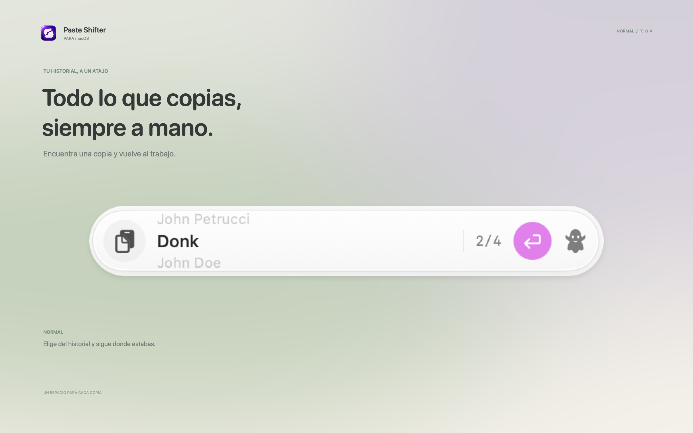
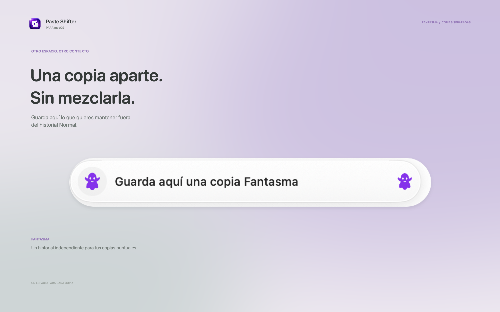
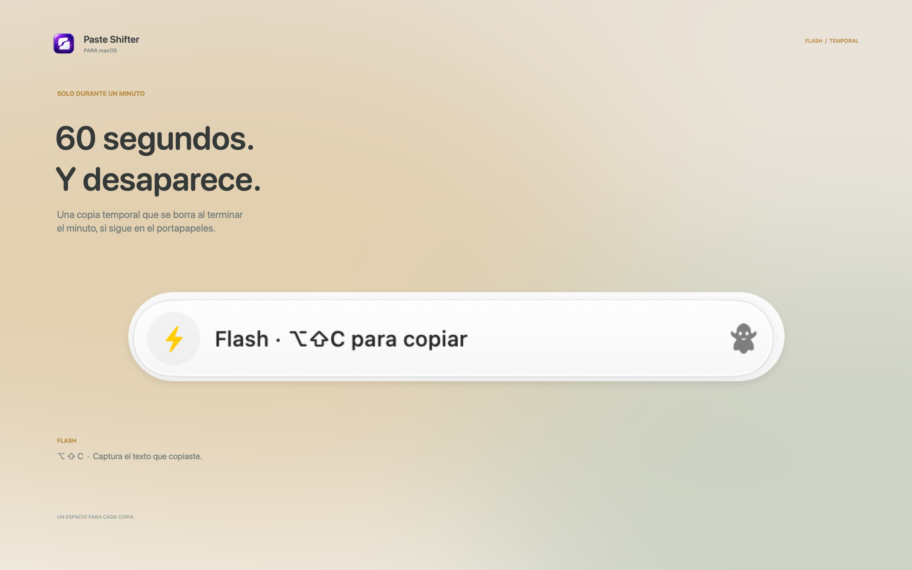
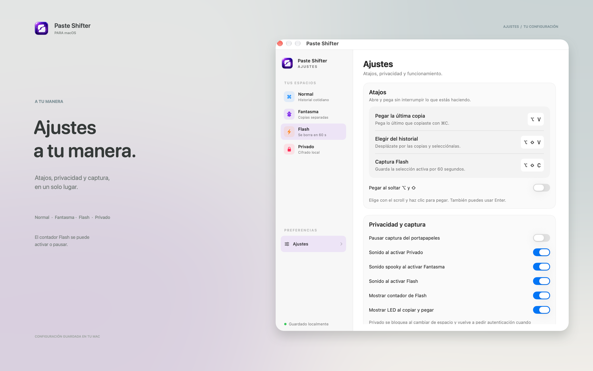

01 · Normal El historial cotidiano, a un atajo.
Cuatro capturas promocionales para macOS, en formato 16:10 y 2560 × 1600 px. Las cápsulas del widget y la ventana de Ajustes parten de tus capturas reales; el historial Normal usa texto ficticio y Flash muestra su estado real, sin inventar una cuenta regresiva.




Textos de ejemplo donde corresponde. Consulta las especificaciones de capturas de Apple.